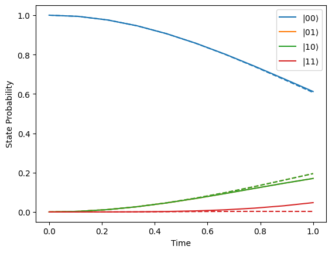

The Rydberg Blockade#
This notebook is inspired by the review paper “Many-Body Physics with Individually-Controlled Rydberg Atoms” by Antoine Browaeys & Thierry Lahaye. It’s aim is to introduce the The Rydberg Hamiltonian and the concept of the Rydberg Blockade.
import qutip as qp
import numpy as np
import matplotlib.pyplot as plt
Hamiltonian#
The general Rydberg Hamiltonain (where the Rydberg state is the same for all atoms) reads
where
\(\Omega\) is the Rabi frequency, which may be time dependent
\(\delta\) is the detuning, which may be time dependent
\(C_6\) is a device specific constant
\(r_{ij}\) is the distance between qubits \(i\) and \(j\)
We take \(|0\rangle\) and \(|1\rangle\) to be the ground and Rydberg state respectively. Then we have
and
The Rydberg radius is defined as
i.e. for atoms separated by a distance equal to Rydberg radius the interaction term is as large as the Rabi term.
Thus we can write (assuming \(\Omega \ne 0\))
Two Atom Case#
For two atoms separated by distance \(r=\alpha r_b\) we have
We can see that for large values of \(\alpha\) the atoms will behave like independent systems as the as the interaction term will be extremely small.
def create_two_atom_hamiltonian(delta_omega_ratio, alpha):
"""
delta_omega_ratio is delta / Omega
"""
rabi_hamiltonian = 0.5 * (
qp.tensor(qp.sigmax(), qp.qeye(2)) + qp.tensor(qp.qeye(2), qp.sigmax())
)
detuning_hamiltonian = -delta_omega_ratio * (
qp.tensor(qp.num(2), qp.qeye(2)) + qp.tensor(qp.qeye(2), qp.num(2))
)
int_hamiltonian = qp.tensor(qp.num(2), qp.num(2)) / (alpha**6)
return rabi_hamiltonian + detuning_hamiltonian + int_hamiltonian
Let’s plot the state probability evolution for two different values of \(\alpha\). In the plot below we see that decreasing \(\alpha\) means that the state \(|11\rangle\) is surpressed.
def get_probs(x):
return np.real(np.conj(x) * x)
times = np.linspace(0, 1, 10)
delta_omega_ratio = 0.8
alpha = 10.0
hamiltonain = create_two_atom_hamiltonian(delta_omega_ratio, alpha)
initial_state = qp.tensor(qp.fock(2), qp.fock(2))
evolved_states_iso = qp.sesolve(hamiltonain, initial_state, times)
probs = np.array([get_probs(s.full()) for s in evolved_states_iso.states])
for i in range(4):
plt.plot(
times, probs[:, i, 0], label=r"$|%s\rangle$" % np.binary_repr(i, 2), c=f"C{i}"
)
alpha = 0.7
hamiltonain = create_two_atom_hamiltonian(delta_omega_ratio, alpha)
evolved_states_int = qp.sesolve(hamiltonain, initial_state, times)
probs = np.array([get_probs(s.full()) for s in evolved_states_int.states])
for i in range(4):
plt.plot(times, probs[:, i, 0], ls="--", c=f"C{i}")
plt.xlabel("Time")
plt.ylabel("State Probability")
plt.legend()
plt.show()

By printing out the eigenvalues of the reduced density matrix of atom 1, we see that for large \(\alpha\) there is almost no entanglement between the atoms, while for a smaller \(\alpha\) entanglement is present.
psi1 = evolved_states_iso.final_state.ptrace(0)
print(np.linalg.eigvals(psi1.full()))
psi2 = evolved_states_int.final_state.ptrace(0)
print(np.linalg.eigvals(psi2.full()))
[1.00000000e+00-6.04092904e-18j 1.61653032e-14-2.17146466e-17j]
[0.95052887+4.56917150e-18j 0.04947113+2.31864041e-17j]